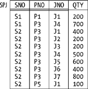
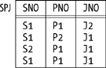

|
|
< Day Day Up > |
|
Join Dependencies and Fifth Normal FormFifth normal form (5NF) is—in a certain special sense which I'll explain later in this section—"the final normal form." In fact, just as BCNF is the normal form with respect to functional dependencies, so fifth normal form is the normal form with respect to what are called join dependencies:
The JD {A,B, . . . ,Z} is read as "star A, B, . . . , Z." Points arising from this definition:
As an example of this latter point, consider relvar RS once again (Figure 7-2). That relvar satisfies the FD {CITY} Now, we saw in the previous section that there are always "arrows out of superkeys"; that is, certain functional dependencies are implied by superkeys, and we can never get rid of them. More generally, in fact, certain join dependencies are implied by superkeys, and we can never get rid of those, either. To be specific, the JD {A,B, . . . ,Z} is implied by superkeys if and only if each of A, B, . . . , Z is a superkey for the pertinent relvar R. For example, consider our usual suppliers relvar S. The fact that {SNO} is a superkey (actually a key) for that relvar implies among other things that the relvar satisfies this JD:
{ SN, SS, SC }
where SN is {SNO,SNAME}, SS is {SNO,STATUS}, and SC is {SNO,CITY} (note that each of these is a superkey for S). And it's certainly true that we could nonloss-decompose S, if we wanted to, into its projections on SN, SS, and SC—though whether we would actually want to is another matter. We also saw in the previous section that certain FDs are trivial. As you're probably expecting by now, certain JDs are trivial too. To be specific, the JD {A,B, . . . ,Z} is trivial if and only if at least one of A, B, . . . , Z is equal to the entire heading of the pertinent relvar R. For example, here's one of the many trivial JDs that relvar S satisfies:
{ S, SN, SS, SC }
I'm using the name S here, just for the moment, to refer to the set of all attributes—the heading—of relvar S (corresponding, of course, to the identity projection of the relvar S). I hope it's obvious that any relvar can always be nonloss-decomposed into a given set of projections if one of the projections in that set is the pertinent identity projection. (Though it's a bit of a stretch to talk about "decomposition" in such a situation, because one of the projections in that "decomposition" is identical to the original relvar; I mean, there's not much "decomposing" going on here!) Having pinned down the notion of JD precisely, I can now give a precise definition of 5NF:
In other words, the only JDs satisfied by a 5NF relvar are ones we can't get rid of; it's if a relvar satisfies any other JDs that it's not in 5NF (and therefore suffers from redundancy problems), and so probably needs to be decomposed. The Significance of 5NFI'm sure you noticed that I didn't show an example in the foregoing discussion of a relvar that was in BCNF but not in 5NF (and so could be nonloss-decomposed to adavantage). The reason I didn't is this: while JDs that aren't just simple FDs do exist, (a) those JDs tend to be unusual in practice, and (b) they also tend to be a little complicated, more or less by definition. Because they're complicated, I decided not to give an example right away (I'll give one in the next subsection, however); because they're unusual, they aren't so important anyway from a practical point of view. Let me elaborate. First of all, if you're a database designer, you certainly do need to know about JDs and 5NF; they're tools in your toolkit, as it were, and (other things being equal) you should generally try to ensure that all of the relvars in your database are in 5NF. But most relvars (not all) that occur in practice, if they're at least in BCNF, are in 5NF as well; that is, it's quite rare in practice to find a relvar that's in BCNF and not also in 5NF. Indeed, there's a theorem that addresses this issue:
This theorem is quite useful. What it says is that if you can get to BCNF (which is easy enough) and there aren't any composite keys in your BCNF relvar (which is often but not always the case), you don't have to worry about the complexities of general JDs and 5NF—you know without having to think about the matter any further that the relvar simply is in 5NF. As an aside, I remark in the interests of accuracy that the foregoing theorem actually applies to 3NF, not BCNF; that is, it really says a 3NF relvar with no composite keys is necessarily in 5NF. But every BCNF relvar is in 3NF, and in any case BCNF is much more important than 3NF, pragmatically speaking. So 5NF as a concept is perhaps not all that important from a practical point of view. But it's very important from a theoretical one, because (as I said at the beginning of this section) it's "the final normal form" and—what amounts to the same thing—it's the normal form with respect to general join dependencies. For if relvar R is in 5NF, the only nontrivial JDs are ones implied by superkeys. Hence, the only nonloss decompositions are ones in which every projection is on the attributes of some superkey; in other words, every such projection includes some key of R. As a consequence, the corresponding "recomposition" joins are all one-to-one, and no redundancies are or can be eliminated by the decomposition. Let me put this point another way. To say that relvar R is in 5NF is to say that further nonloss decomposition of R into projections, while it might be possible, certainly won't eliminate any redundancies. Note very carefully, however, that to say that R is in 5NF is not to say that R is redundancy-free. There are many kinds of redundancy that projection as such is powerless to remove—which is an illustration of the point I made earlier, in the section "The Place of Design Theory," to the effect that there are numerous issues that design theory simply doesn't address. By way of example, consider Figure 7-4, which shows a sample value for a relvar, SPJ, that's in 5NF and yet suffers from redundancy. For example, the fact that supplier S2 supplies part P3 appears several times; so does the fact that part P3 is supplied to project J4—JNO stands for project number— and so does the fact that project J1 is supplied by supplier S2. (The relvar predicate is Supplier SNO supplies part PNO to project JNO in quantity QTY, and the sole key is {SNO,PNO,JNO}.) The only nontrivial join dependency satisfied by this relvar is this functional dependency:[*]
{ SNO, PNO, JNO } which is an "arrow out of a superkey." In other words, QTY depends on all three of SNO, PNO, and JNO, and it can't appear in a relvar with anything less than all three. Hence, there's no nonloss decomposition that can remove the redundancies. There are a few further points I need to make here. First, I didn't mention the point previously, but you probably know that 5NF is always achievable; that is, it's always possible to decompose a non-5NF relvar into 5NF projections. Figure 7-4. The 5NF relvar SPJ—sample valueSecond, every 5NF relvar is in BCNF, of course; so to say that R is in BCNF certainly doesn't preclude the possibility that R is in 5NF as well. Informally, however, it's very common to interpret statements to the effect that R is in BCNF as meaning that R is in BCNF and not in any higher normal form. I have not followed this practice in this chapter (and will continue not to do so). Third, because it's "the final normal form," 5NF is sometimes called projection/join normal form (PJ/NF), to stress the point that it's the normal form so long as we limit ourselves to projection as the decomposition operator and join as the recomposition operator. But I should immediately add that it's possible to consider other operators and therefore, possibly, other normal forms. In particular, it's possible, and desirable, to define (a) generalized versions of the projection and join operators, and hence (b) a generalized form of join dependency, and hence (c) a new "sixth" normal form, 6NF. It turns out that these developments are particularly important in connection with support for temporal data, and they're discussed in detail in the book Temporal Data and the Relational Model by Hugh Darwen, Nikos Lorentzos, and myself (Morgan Kaufmann, 2003). However, all I want to do here is give a definition of 6NF that works for "regular" (that is, nontemporal) relvars. Here it is:
Equivalently, a "regular" relvar is in 6NF if and only if it consists of a single key, plus at most one additional attribute. Our usual shipments relvar SP is in 6NF, as is relvar SPJ (see Figure 7-4); by contrast, our usual suppliers and parts relvars S and P are in 5NF but not 6NF. NOTE A 6NF relvar is sometimes said to be irreducible, because it can't be nonloss-decomposed via projection at all. Any 6NF relvar is necessarily in 5NF. To close this subsection, observe that it follows from all of the above that any relvar that's "all key" or consists of a key plus one additional attribute, since it's in 6NF, is certainly in BCNF. However, it does not follow that such relvars are always well designed! For example, if relvar RS (see Figure 7-2) satisfies the FD {CITY} More on 5NFConsider Figure 7-5, which shows a sample value for a simplified version of relvar SPJ from the previous subsection. Suppose that simplified version satisfies the join dependency {SP,PJ,SJ}, where SP, PJ, and SJ stand for {SNO,PNO}, {PNO,JNO}, and {SNO,JNO}, respectively. What does that JD mean from an intuitive point of view? The answer is as follows: Figure 7-5. Simplified relvar SPJ—sample value
So the original JD is equivalent to the foregoing constraint. But what does that constraint mean in real-world terms? Well, here's a concrete illustration. Suppose relvar SPJ contains tuples that tell us that all three of the following are true propositions:
Now, propositions 1, 2, and 3 together would normally not imply proposition 4. If we know only that propositions 1, 2, and 3 are true, then we know that Smith supplies monkey wrenches to some project (say, project z), that some supplier (say, supplier x) supplies monkey wrenches to the Manhattan project, and that Smith supplies some part (say, part y) to the Manhattan project—but we cannot validly infer that x is Smith or y is monkey wrenches or z is the Manhattan project. False inferences such as this one are examples of what's sometimes called the connection trap. In the case at hand, however, the existence of the JD tells us there is no trap; that is, we can validly infer proposition 4 from propositions 1, 2, and 3 in this particular case. Observe now the cyclic nature of the constraint ("IF s is connected to p and p is connected to j and j is connected back to s again, THEN s and p and j must all be directly connected, in the sense that they must all appear together in the same tuple"). It's precisely if such a cyclic constraint occurs that we might have a relvar that's in BCNF and not in 5NF. In my experience, however, such cyclic constraints are very rare in practice—which is why I said in the previous subsection that I don't think they're very important from a practical point of view. I'll close this section with a brief remark on fourth normal form (4NF). In the subsection "The Significance of 5NF," I said that if you're a database designer, you need to know about JDs and 5NF. In fact, you also need to know about multi-valued dependencies (MVDs) and fourth normal form. However, I mention these concepts for completeness only; like 2NF and 3NF, they're mainly of historical interest. I'll just note for the record that:
Details of what it means for an MVD to be trivial or implied by some superkey are beyond the scope of this discussion (see Exercise 7-19 at the end of the chapter)—but let me at least point out that it follows from these definitions that repeated nonloss-decomposition into exactly two projections is sufficient to take us at least as far as 4NF. By contrast, the JD in the previous subsection involved three projections, as I'm sure you noticed. In fact, we can say that in order to reach 5NF, decomposition into n projections (where n > 2) is necessary only if the relvar in question satisfies an n-way cyclic constraint: equivalently, only if it satisfies a JD involving n projections and not one involving fewer. |
|
|
< Day Day Up > |
|
 {STATUS} and can therefore be nonloss-decomposed into its projections SNC (on SNO, SNAME, and CITY) and CS (on CITY and STATUS). It follows that relvar RS satisfies the JD {SNC,CS}—if you'll allow me to use the names SNC and CS, just for the moment, to refer to the applicable subsets of the heading of that relvar as well as to the projections as such.
{STATUS} and can therefore be nonloss-decomposed into its projections SNC (on SNO, SNAME, and CITY) and CS (on CITY and STATUS). It follows that relvar RS satisfies the JD {SNC,CS}—if you'll allow me to use the names SNC and CS, just for the moment, to refer to the applicable subsets of the heading of that relvar as well as to the projections as such. SP AND
SP AND